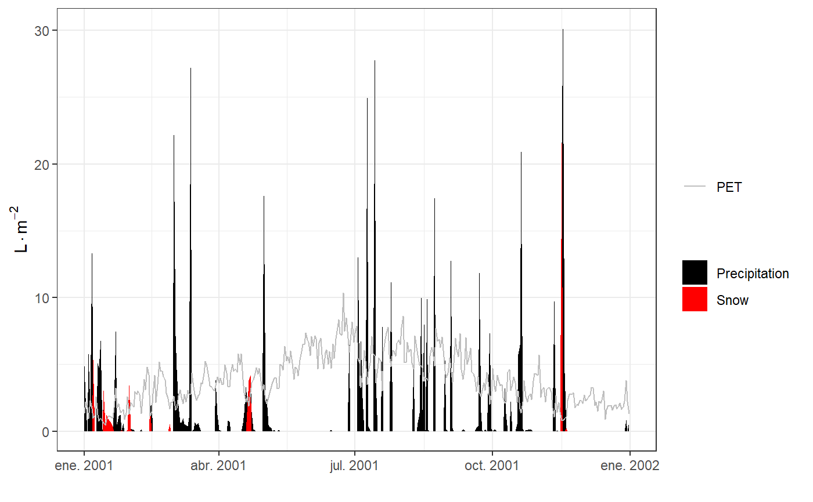

plot.spwb.RdFunction plot plots the results of the soil plant water balance model (see spwb), plant water balance model (see pwb) or the forest growth model (see growth), whereas function summary summarizes the model's output in different temporal steps (i.e. weekly, annual, ...).
# S3 method for spwb plot(x, type="PET_Precipitation", bySpecies = FALSE, xlim = NULL, ylim=NULL, xlab=NULL, ylab=NULL, ...) # S3 method for pwb plot(x, type="PlantTranspiration", bySpecies = FALSE, xlim = NULL, ylim=NULL, xlab=NULL, ylab=NULL, ...) # S3 method for growth plot(x, type="PET_Precipitation", bySpecies = FALSE, xlim = NULL, ylim=NULL, xlab=NULL, ylab=NULL, ...) # S3 method for pwb summary(object, freq="years", output="WaterBalance", FUN=sum, bySpecies = FALSE, ...) # S3 method for spwb summary(object, freq="years", output="WaterBalance", FUN=sum, bySpecies = FALSE, ...) # S3 method for growth summary(object, freq="years", output="WaterBalance", FUN=sum, bySpecies = FALSE, ...)
| x, object | An object of class |
|---|---|
| type | The information to be plotted:
|
| bySpecies | Allows aggregating output by species, before calculating summaries or drawing plots (only has an effect with some values of |
| xlim | Range of values for x. |
| ylim | Range of values for y. |
| xlab | x-axis label. |
| ylab | y-axis label. |
| freq | Frequency of summary statistics (see |
| output | The data table to be summarized. Accepted values are |
| FUN | The function to summarize results (e.g., |
| ... | Additional parameters for function |
De Cáceres M, Martínez-Vilalta J, Coll L, Llorens P, Casals P, Poyatos R, Pausas JG, Brotons L. (2015) Coupling a water balance model with forest inventory data to predict drought stress: the role of forest structural changes vs. climate changes. Agricultural and Forest Meteorology 213: 77-90 (doi:10.1016/j.agrformet.2015.06.012).
#Load example daily meteorological data data(examplemeteo) #Load example plot plant data data(exampleforest) #Default species parameterization data(SpParamsMED) #Initialize soil with default soil params (2 layers) examplesoil = soil(defaultSoilParams(2)) #Initialize control parameters control = defaultControl() #Initialize input x = forest2spwbInput(exampleforest,examplesoil, SpParamsMED, control) #Call simulation function S1<-spwb(x, examplesoil, examplemeteo, elevation = 100)#> Initial soil water content (mm): 200.239 #> Performing daily simulations .....................................done. #> Final soil water content (mm): 180.113 #> Change in soil water content (mm): -20.1257 #> Water balance result (mm): -20.1257 #> Water balance components: #> Precipitation (mm) 513 #> Rain (mm) 462 Snow (mm) 51 #> Interception (mm) 86 Net rainfall (mm) 376 #> Infiltration (mm) 419 Runoff (mm) 8 Deep drainage (mm) 103 #> Soil evaporation (mm) 39 Transpiration (mm) 297#> W.1 W.2 ML.1 ML.2 MLTot WTD SWE #> 2001-01-01 0.9922356 0.9947366 72.24882 126.75412 199.0029 1000 1.65056874 #> 2001-02-01 0.9711613 0.9500296 70.71431 121.05734 191.7716 1000 0.27480347 #> 2001-03-01 0.9747463 0.9661769 70.97535 123.11491 194.0903 1000 0.01762496 #> 2001-04-01 0.9538158 0.8615827 69.45131 109.78701 179.2383 1000 0.57895858 #> 2001-05-01 0.9493763 0.8599847 69.12805 109.58338 178.7114 1000 0.00000000 #> 2001-06-01 0.8333673 0.6366546 60.68096 81.12560 141.8066 1000 0.00000000 #> 2001-07-01 0.9583558 0.6870262 69.78189 87.54418 157.3261 1000 0.00000000 #> 2001-08-01 0.9633368 0.7631771 70.14458 97.24769 167.3923 1000 0.00000000 #> 2001-09-01 0.9643429 0.8029288 70.21783 102.31305 172.5309 1000 0.00000000 #> 2001-10-01 0.9768679 0.8261857 71.12983 105.27656 176.4064 1000 0.00000000 #> 2001-11-01 0.9717403 0.9225943 70.75647 117.56141 188.3179 1000 2.59388333 #> 2001-12-01 0.9402455 0.9292045 68.46320 118.40370 186.8669 1000 0.00000000 #> PlantExt.1 PlantExt.2 psi.1 psi.2 #> 2001-01-01 0.06686311 0.2356511 -0.03444909 -0.03401859 #> 2001-02-01 0.13947418 0.4915593 -0.03863988 -0.04416217 #> 2001-03-01 0.14492370 0.5107660 -0.03755349 -0.03965679 #> 2001-04-01 0.18493869 0.6517837 -0.04222177 -0.07286244 #> 2001-05-01 0.21828994 0.7693124 -0.04427942 -0.07676995 #> 2001-06-01 0.31120215 1.0879804 -0.08631691 -0.42670990 #> 2001-07-01 0.26268290 0.9124204 -0.04198163 -0.38689128 #> 2001-08-01 0.26538933 0.9351735 -0.04001082 -0.13920740 #> 2001-09-01 0.20828518 0.7340370 -0.04002550 -0.10297327 #> 2001-10-01 0.14940358 0.5265229 -0.03738415 -0.09492900 #> 2001-11-01 0.10791619 0.3803352 -0.03838629 -0.05214590 #> 2001-12-01 0.10093362 0.3557280 -0.04567248 -0.04910614